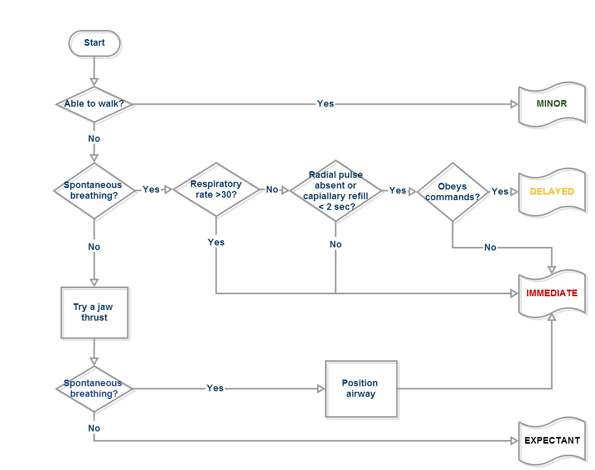
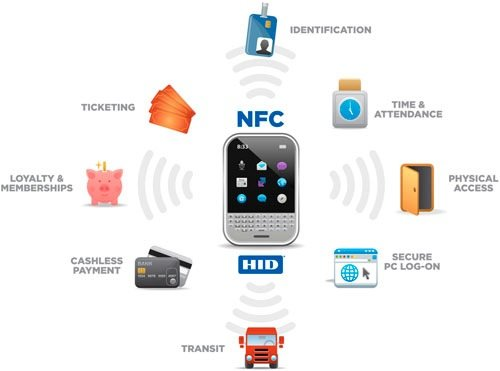
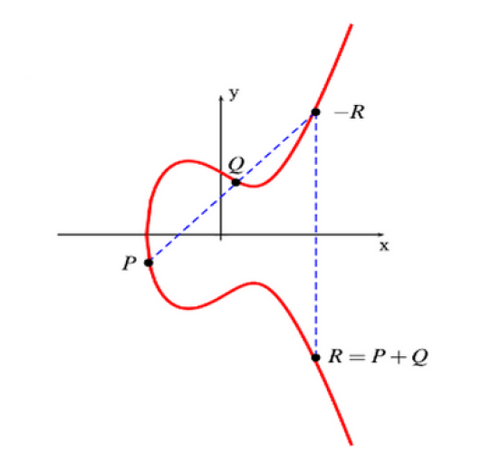
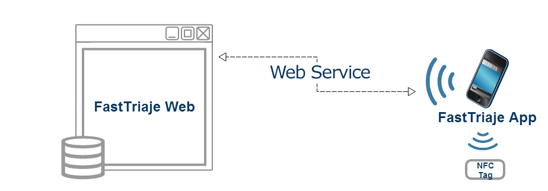
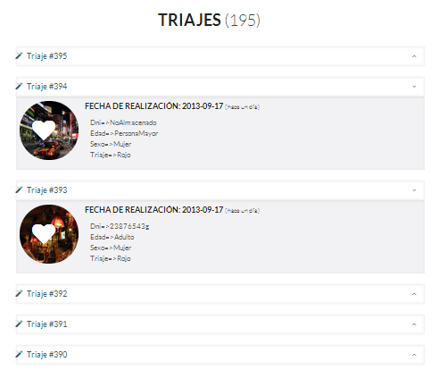
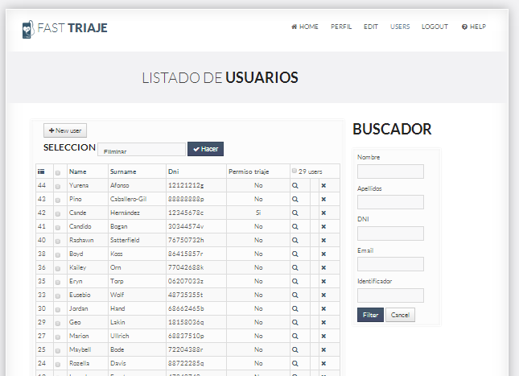
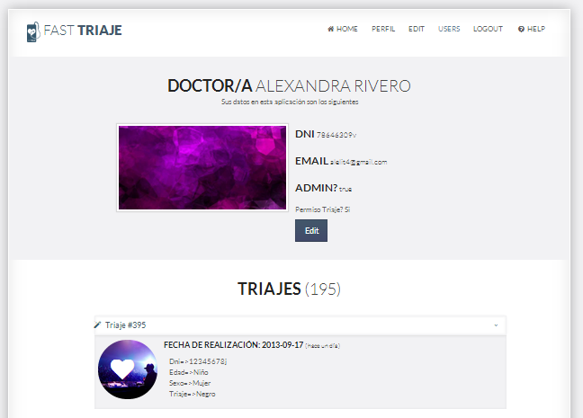
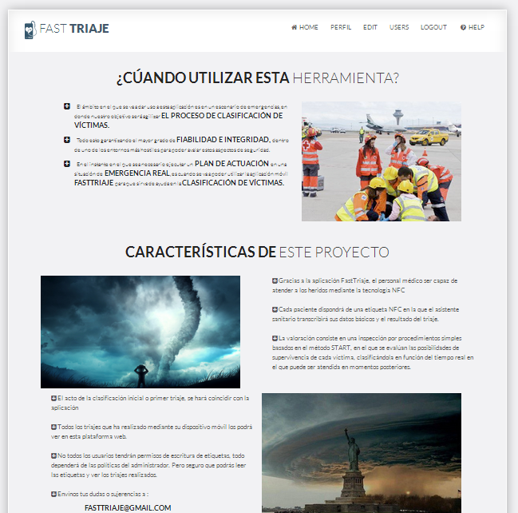
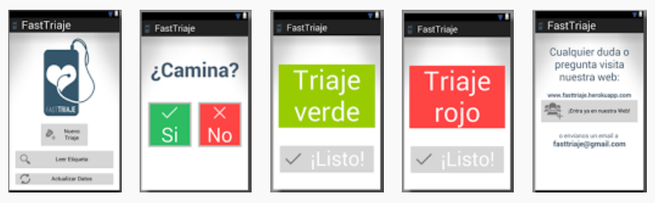
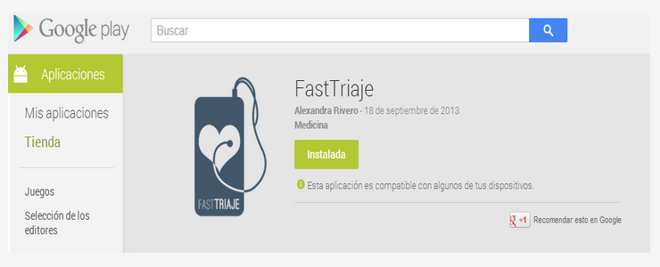

A mobile system for victim classification in emergency situations


Alexandra Rivero-García
The high penetration of
Communication Technologies
Smartphones
... may help
System
Victim diagnosis
Emergency situations
TRIAGE (Triaje)
"A simple, completed, objective and fast process to obtain an initial clinical assessment of people with the objective of evaluating their immediate survival capacities and sorting them according their severity."
All triage system should guarantee:
- Saving lives
- Improving logistics regarding
( material and human resources )
Triage steps
- First triage (or simple triage)
Hostile zone with fast methods
(SHORT, SIEVE or START)
- Second triage
Medical station or in a hospital
(MAT, SET or MTS)
START method
( Simple Triage and Rapid Treatment )

START colored tags
Different seriousness level
Black Victims from whom we divert the resources
Red Victims requiring immediate care
Yellow Victims requiring urgent care
Green Victims who are not seriusly injured
Technology development
- Android + NFC
Near Field Communication
" Short-range high frequency wireless communication technology."
An extension of RFID
(Radio Frequency Identification)
Interface of tags and reader into a single device.
( Peer to peer mode )
Near Field Communication

Some key features of NFC:
- High proximity between devices is needed ( <10cm)
- It is an open technology based on standards
- It may be considered as a simple and reliable technology
- Two communication modes are supported:
Active and passive mode.

We thought about ...
- Computational restrictions
- Impact on performance, power consumption and available resources
We added security
Lightweight Cryptography based on Elliptic Curves

We solve the authentication with...
Zero Knowledge Proofs (ZKP)
"These protocols allow a party A to convince another party B, about the knowledge of certain secret information without sending anything related to it"
FastTriaje System
START - Android - NFC

FastTriaje Web

www.fattriaje.herokuapp.com




FastTriaje App
Questions - Status

Play Store

Conclusions
- Standards by medical staff in hostile situation.
- Mobile application, NFC tags and a web platform.
- Security and reliability requirements.
Future Work
- Adding some statistical functionalities
- Owing a patient register
- Implementing second kind of triaje